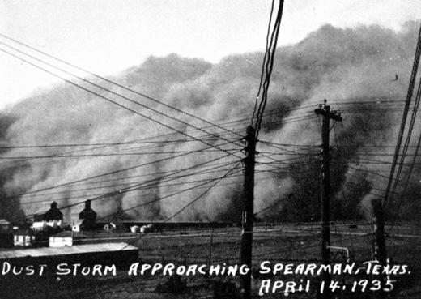

In what came to be known as “Black Sunday,” one of the most devastating storms of the 1930s Dust Bowl era sweeps across the region on April 14, 1935. High winds kicked up clouds of millions of tons of dirt and dust so dense and dark that some eyewitnesses believed the world was coming to an end.